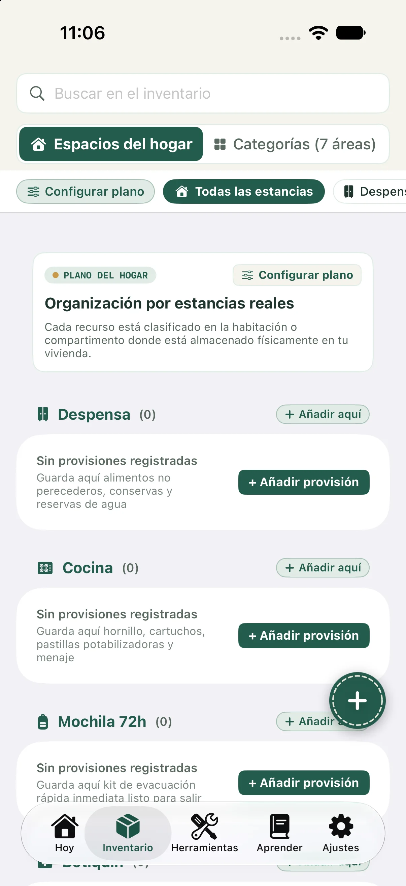
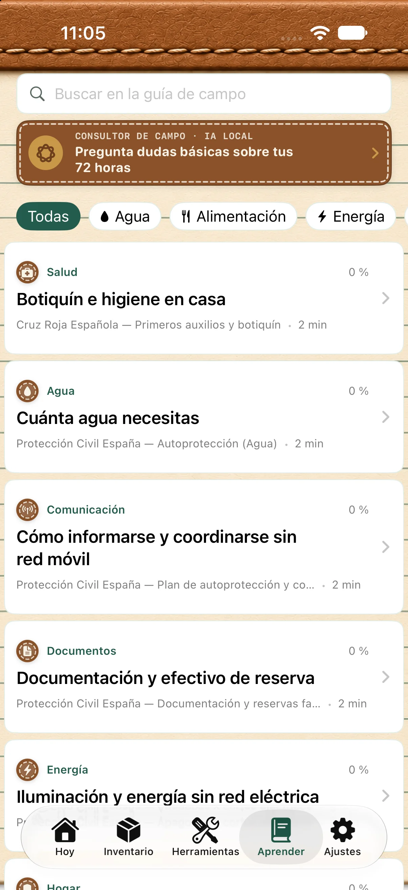

Describe your household
Enter adults, children, pets, climate and a few care needs. The app adjusts its water and food references to those details.
Add the people in your household and organise emergency supplies by storage space, including a 72-hour go-bag. Check estimated water, food, power and health coverage against a three-day goal, then review gaps to prepare for a power cut, water outage or other emergency.

For household emergency preparedness and preppers: log water, food, power and health supplies, compare them with a 72-hour goal and review what you can add at home.
Enter adults, children, pets, climate and a few care needs. The app adjusts its water and food references to those details.
Add items, quantities, expiry dates, photos, notes and where each item is stored. Set up spaces such as a pantry or storage room.
Check the estimated autonomy and the status of areas available to you. Cards suggest tasks; mark them complete or open their guide.
All four screens are visible together on desktop. Swipe horizontally on mobile. Actual app screenshots in Spanish.



A go-bag and supplies kept at home serve different needs. 72 Hours helps you record where your supplies are and review gaps before a power cut or water outage.
This is a starting point, not a universal checklist or medical advice. Read official guidance and adapt your family emergency plan.
You can review the expiry dates you record; this does not claim automatic expiry notifications. Estimates depend on the data you enter.
You do not need to start with a large collection of survival gear. First, check what you have, where it is stored and which needs remain uncovered. Whether you are new to emergency planning or an experienced prepper looking for a preparedness app, a household inventory helps you review supplies before buying more.
Preparing for a supply interruption is different from handling an emergency in progress. Review your family plan, access to food and water and official information sources in advance. 72 Hours helps you organise and learn. It is not an official emergency alert service, does not predict emergencies and does not replace your local emergency number.
Features reflected in the current app screens and services.
Compare logged supplies with a 72-hour goal and open a breakdown of the calculation.
Water, food, power, health, documents, communications and home safety; three areas require full access.
A deck of up to four visible tasks prioritises what you can prepare next based on identified gaps.
Track quantity, location, expiry date, notes and photos. Import and export a local JSON backup.
Read short articles with linked sources. The list can be ordered around your household’s coverage.
Ask preparedness questions on-device with Apple Intelligence when the feature and device are compatible.
Premium has six pages: map and saved waypoints, SOS flash, whistle, compass, frequencies and water-rationing calculation.
The interface is in English and Spanish. Follow your system language or choose one in Settings.
Cards and articles show linked references you can open.
References are adapted by region: in Spain, the app points to Civil Protection , the Red Cross and the Ministry of Health and Spain’s Bank of Spain; elsewhere, some references point to FEMA Ready.gov . Calculations use indicative household values; they do not replace official instructions or medical advice.
The estimate does not guarantee or certify that a home is safe. In an emergency, follow emergency services and competent authorities.
Inventory and calculations use local data. Downloading maps, opening external links and purchasing or restoring Premium require a connection. GPS needs location permission.
These guides provide background for an emergency supplies kit and family plan. They do not certify, recommend or endorse the 72 Hours app.
No. There is no 72 Hours registration, email or password. Your profile, inventory, photos and notes are stored on your device. Purchases use Apple and RevenueCat services.
It compares logged quantities with household water and calorie references, then shows an estimate and its breakdown. It is guidance, not a safety guarantee.
Cards after the first four, the documents, communications and home safety areas, and the complete Tools Notebook with six utilities.
The inventory, calculations and bundled content run on-device. Map downloads, purchases and purchase restoration need a connection. Download map coverage before relying on it offline.
No. It uses Apple Intelligence and only answers when the feature is available on a compatible device and system. The app indicates when it is unavailable.
The water guide opens external retailer links; some may be affiliate links.
The interface is in English and Spanish for iPhone and iPad running iOS/iPadOS 18 or later. Field Advisor has additional compatibility requirements.